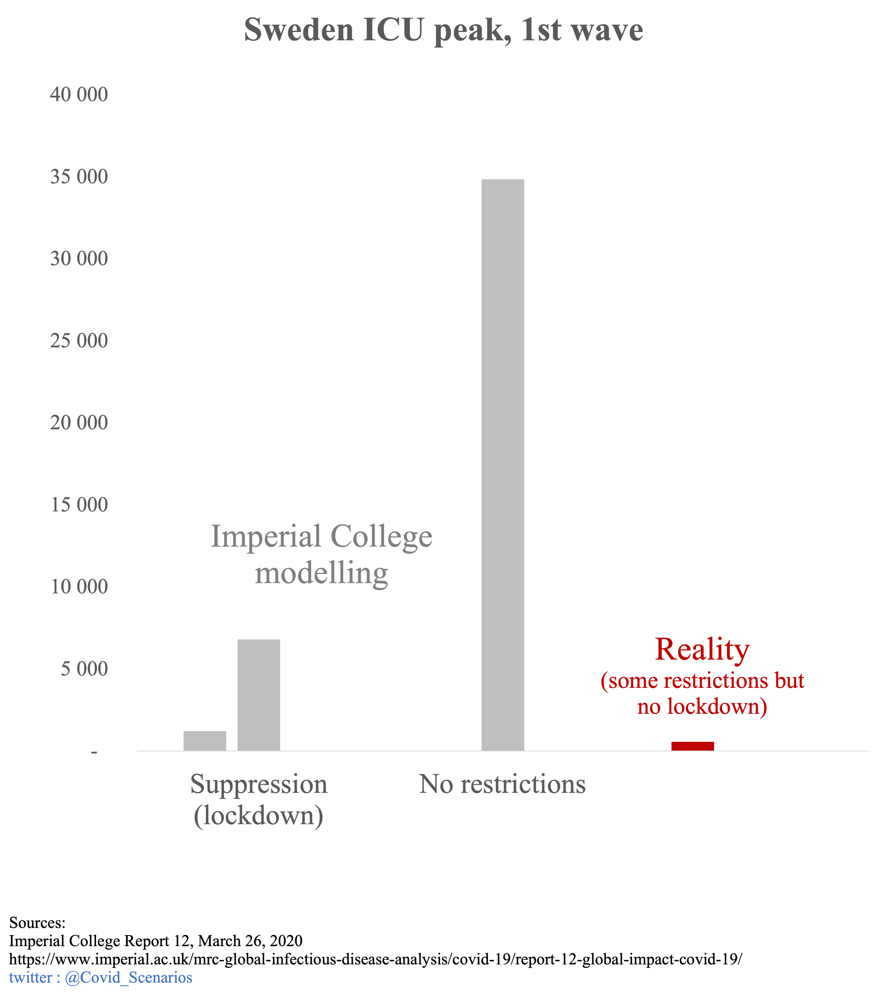
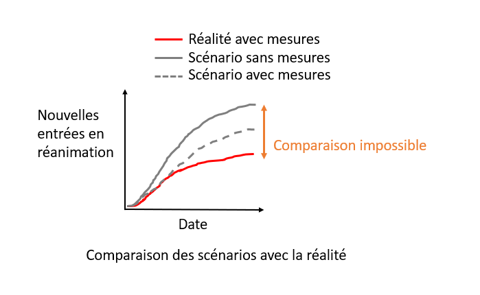
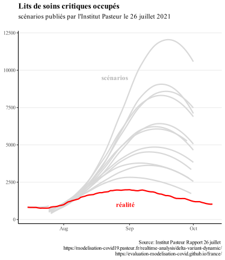
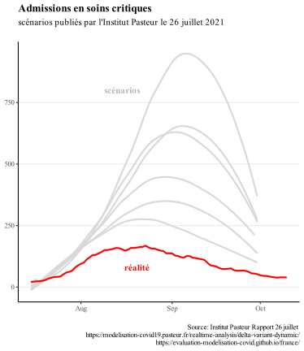
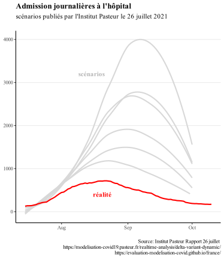

Our approach
This site aims to provide a retrospective on the main modeling scenarios used to guide the major decisions taken over the last two years (e.g. confinements, curfews, or the implementation of the health pass). A detailed description of the modeling scenarios is available on the [Home] page (https://evaluation-modelisation-covid.github.io/france/). An explanation of the importance of the evaluation of modeling scenarios is available on the page Impact.
Why is evaluating modeling scenarios important?
Modeling scenarios have played a key role in public policy since the beginning of the covid-19 pandemic. Therefore, in order to make good decisions, it is important to have modeling scenarios that anticipate reality.
For example, it is modeling scenarios that have led many governments to move beyond traditional epidemic control measures to strict containment. Indeed, the WHO’s 2019 pandemic preparedness report did not recommend under any circumstances border closures, contact tracing or quarantine of contact cases during the pandemic phase (let alone widespread containment).
Thus, in its report of March 12, 2020, the Scientific Council stated that the traditional measures used to limit the spread of epidemics would not be sufficient to limit the circulation of the virus, implying the need for strict containment. epidemics would not be able to sufficiently limit the circulation of the virus, implying the need for strict containment (“it is not expected that the reduction in the size of the epidemic peak will be sufficient to avoid saturation of the health system. (…) This intuition was illustrated through the realization of a particular COVID19 model (Neil Ferguson, personal communication).”), based on the model whose results are presented below.

The model scenarios are represented by the grey bars, representing 2 extremes: strict containment as followed by the other European countries, and no action. The approach followed by Sweden is intermediate, somewhere in between.
We can see that the scenarios have largely overestimated the size of the hospital peak: even the optimistic scenario with strict confinement overestimates this peak by a factor of 2, even though Sweden has not confined its population.
This example illustrates the importance that modeling scenarios can have, for example in deciding a government to implement strict containment.
Can we really evaluate them ?
An argument often heard about modelling scenarios is the following: as the scenario allows to anticipate the worst, it leads to take measures that will prevent the modelled scenario from happening, which explains the discrepancy between the modelled scenario and the reality (where braking measures have been taken!). Indeed, it is not possible to establish a comparison in this case.

However, modeling scenarios often incorporate several assumptions about the braking measures that might be put in place. Here, we will only compare reality with scenarios where the braking measures implemented were also modeled.

Thus, the comparison between modeling scenarios and reality will allow us to assess whether they have correctly anticipated reality.
For example, during the 4th wave, the Institut Pasteur first published a report on July 9. After the announcement of the extension of the health pass in mid-July, the Institut Pasteur published a new report integrating the effect of this measure. Comparing the modelling of the July 9 report with reality is not legitimate, but comparing the predictions of the following report with reality is (because the impact of the measures has already been modelled).
ICU beds

ICU admissions

Hospital Admissions

These scenarios compare the forecasts made for the month of August 2021 with the actual evolution during the months of August: as the scenarios incorporate the measures put in place, the comparison is possible.
Does it really matter if the models do not match reality?
It may be thought that it is better to overestimate reality and “systematically plan for the worst”, and thus lead politicians to respond with more measures to limit the spread of the epidemic. In reality, most measures to curb the epidemic (containment, curfews, school closures, public place closures) have negative health, social and economic impacts. Therefore, overreacting to the epidemic is not a good thing (nor is underreacting).

Overly pessimistic modelling can thus lead to unnecessary restrictions being maintained. For example, when the UK government decided to lift most of its restrictive measures (such as capacity limitations in public places, mandatory masking and travel restrictions) on 19 July 2021, without introducing a “health pass” for access to public events or places, this initiative was decried by scientists as “dangerous and premature”. This thesis of “dangerous and premature” openness was supported by the British Scientific Advisory Board’s (SAGE) modelling, shown below.

These models were largely pessimistic, and thus overestimated the need to keep restrictive measures in place. Modelling that was not aligned with reality almost prevented a return to near-normal life for the British people.
A more detailed description of the modeling scenarios is available on the [Modeling] page (https://evaluation-modelisation-covid.github.io/france/).